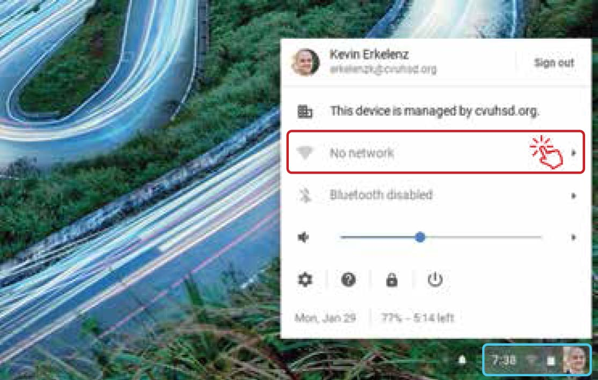
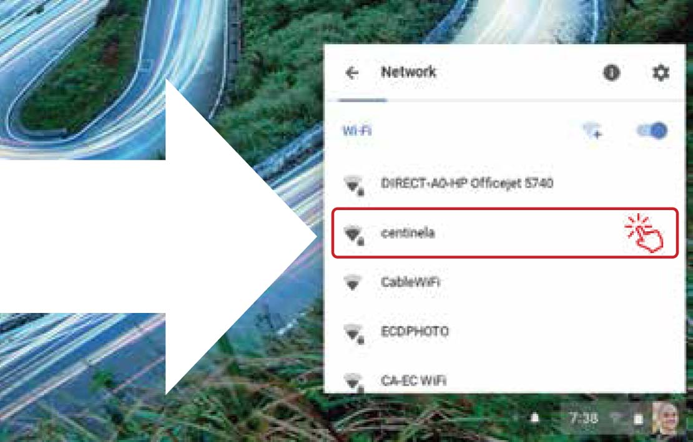
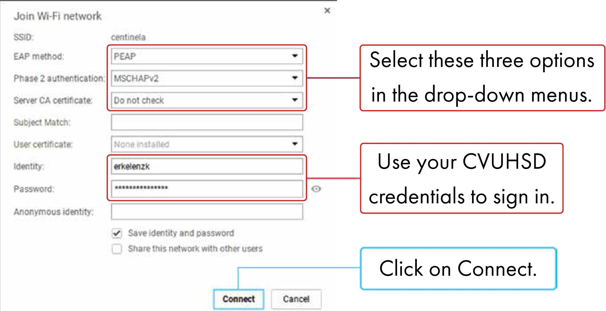

CVUHSD Home
Quick Links
Standard Staff Tools
Administrator Tools
Teacher Tools
Classroom Tools
Learning Tools
Digital Textbooks
Digital Library Resources
School Websites
Student Portal
Troubleshooting
All Links
CVUHSD
Troubleshooting
Connecting to Centinela Wi-Fi
Connecting to Centinela Wi-Fi
Chromebook Edition
01
of 02
Locate & Select Network
 
Click on the small panel in the bottom right ↑ corner in order to open the control center shown above
02
of 02
Enter Credentials & Connect

Download this Tutorial
ALL LINKS